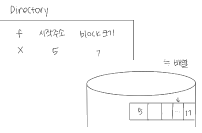
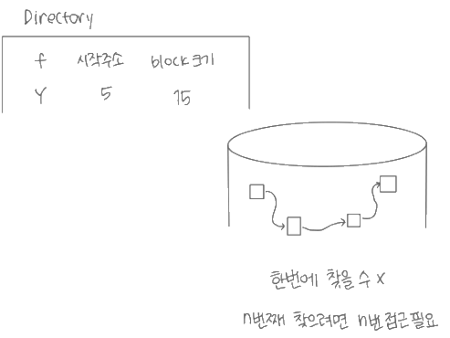
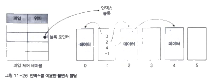
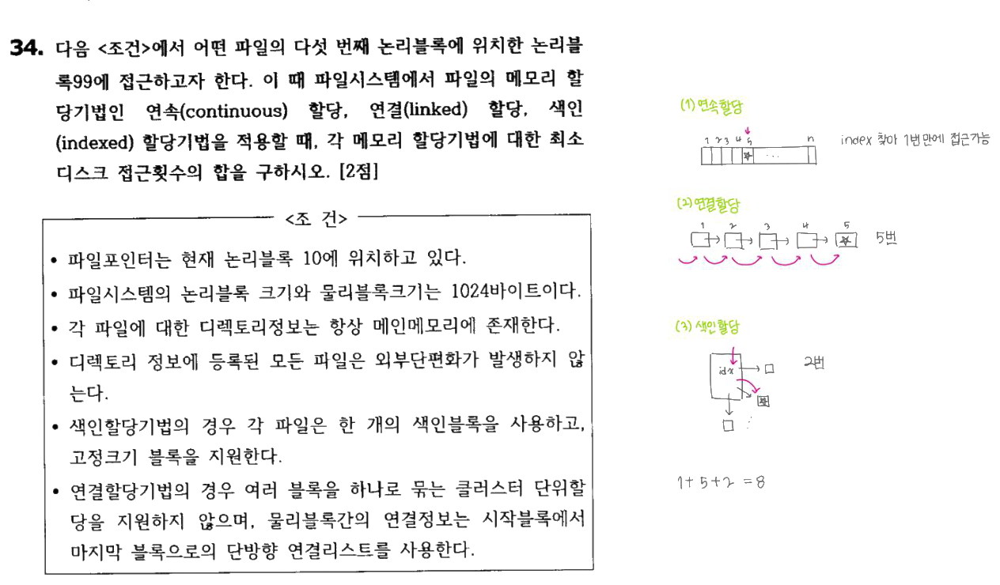
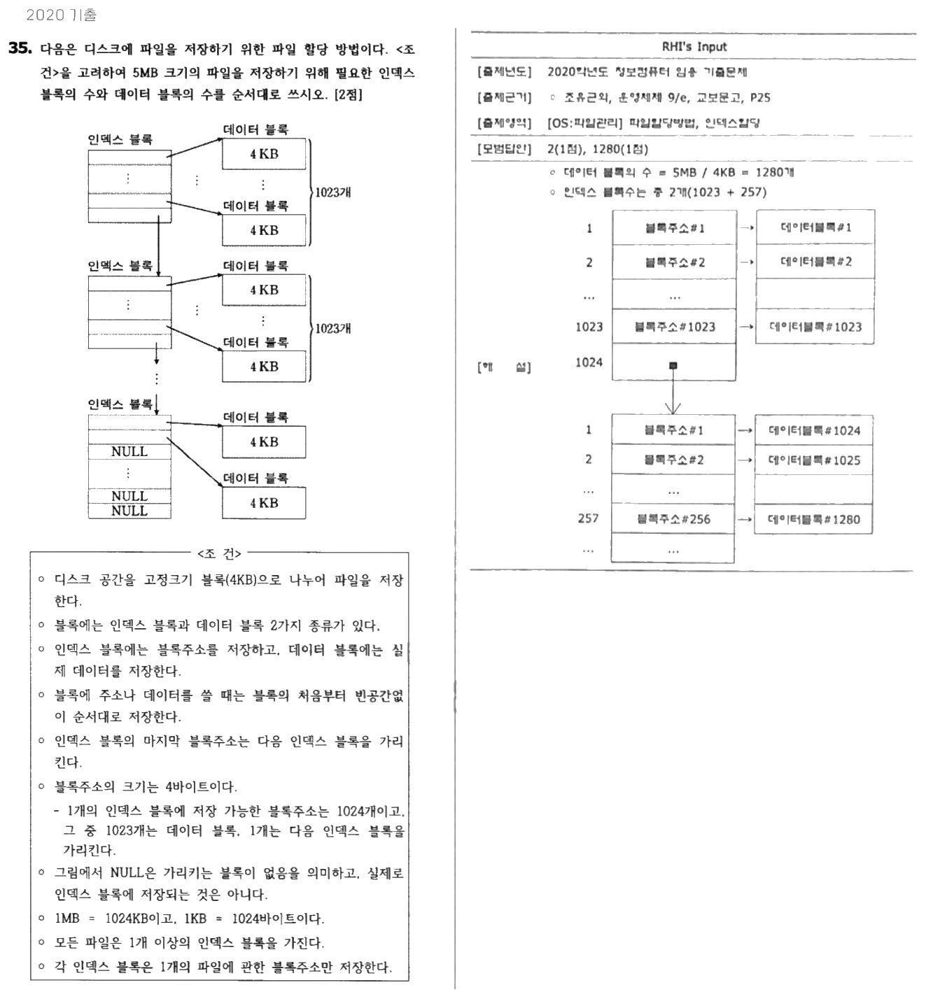

3.4.3
보조 저장 공간 관리 및 파일 할당 방법
보조 저장 공간 관리 및 파일 할당 방법
- 파일 할당 방법
- 연속 할당 : 디스크 내의 연속적인 공간(배열)에 배치
- 장점
- ① 파일 접근을 위해 필요한 디스크 탐색(seek) 최소화 가능
- ② 순차 접근, 직접 접근 모두 지원 / 디스크 탐색 횟수 초기화
- ③ 논리적으로 연속한 블록들이 물리적으로 인접하여 순차 접근, 직접 접근 모두 접근 시간 ↓
- 단점
- ① 외부 단편화 발생
- ② 공간 할당 문제 발생 (만들어질 파일 크기 예측이 어렵기 때문)
- ③ 파일 크기에 알맞은 연속 공간이 없으면 파일 생성 불가능
- ④ 파일 크기가 동적으로 변하는 경우 구현이 힘듦

- 연결 할당 : 파일의 디스크 블록들이 디스크 내에 분산 할당되어 있고 블록들 간의 포인터를 가지고 연결
- 연속 할당에 의한 단편화를 해결하기 위해 제안
- 연결 리스트로 동일한 파일에 속하는 블록을 구성하기 때문에 압축 불필요 (이중 연결일 수도, 아닐 수도 있음)
- 장점
- ① 외부 단편화 X, 파일 크기 예측할 필요 X
- ② 디렉토리 구조가 간단, 파일 수정에 의한 추가, 삭제 용이
- 단점
- ① 파일이 분산되어 있어서 논리적으로 연속되는 블록 검색 시 탐색 시간 ↑
- ② 직접 접근 시 오버헤드 큼 (순차 접근은 지원하지만 직접 접근에는 불리 - 결국 순차나 마찬가지) ⇒ FAT 이용해 해결

- 색인 할당 : 파일을 구성하는 블록들을 디스크 내의 임의의 빈 공간에 불연속적으로 할당, 각 파일은 색인 블록을 유지하는 기법
- 모든 포인터들을 하나의 장소인 색인 블록으로 관리함으로써 순차 접근 및 직접 접근 가능
- 여러 개의 색인 블록을 서로 연결하여 사용
- 이미 여유 공간이 없는 색인 블록에 삽입하고자 할 경우 색인 블록을 재구성하거나 오버플로우 공간으로 처리할 수 있음
- 장점
- ① 탐색을 위한 오버헤드 ↓ (단편화 X, 해당 블록에 직접 접근 가능하기 때문)
- ② 외부 단편화 없이도 직접 접근 가능
- 단점
- ① 공간의 낭비 (한두 개 블록을 가진 파일에 대해서도 모두 색인 블록을 따로 생성하므로)

- 기출 문제
- 2010 기출 : 다섯 번째 논리 블록에 접근할 때 연속·연결·색인 할당의 최소 디스크 접근 횟수의 합 (풀이 1 + 5 + 2 = 8)

- 2020 기출 : 5MB 파일을 저장하는 데 필요한 인덱스 블록 수와 데이터 블록 수 (답 2, 1280)
